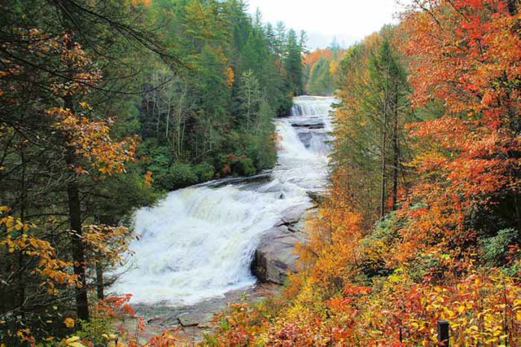
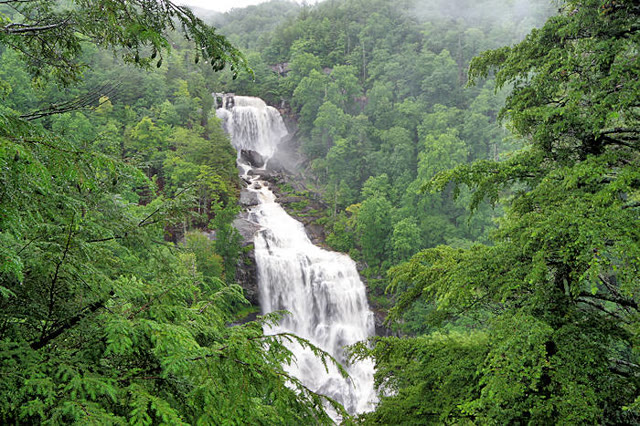
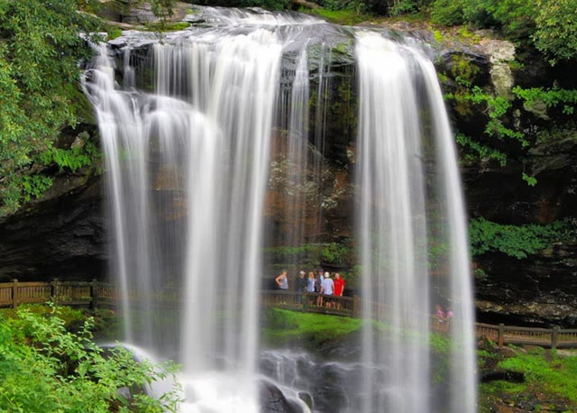

Driving Less Now?
Driving to Duvall for cheaper gas but mabe the cost of gas to get there was more than the savings? $4.98/gal.

Driving to Duvall for cheaper gas but mabe the cost of gas to get there was more than the savings? $4.98/gal.
Scenic drives and maps for planning western North Carolina waterfall day trips, including routes near Asheville, Brevard, Highlands, and the Blue Ridge Parkway.
Read the waterfall drive guide
A dramatic Nantahala National Forest stop on the Whitewater River, with overlooks for viewing one of the tallest waterfall systems east of the Rockies.
Read about Upper Whitewater Falls
A popular roadside waterfall on US 64 where visitors can take a short trail behind the 75-foot cascade for a close-up view.
Read about Dry Falls
Rugged terrain, steep climbs, and longer routes reward prepared hikers with some of the region's best mountain views. Consider: Rainbow Falls, Deep Gap at Mount Mitchell, Rich Mountain Fire Tower, Wildcat Rock Trail, Looking Glass Rock, Cold Mountain, and Graybeard.
Rainbow Falls and Turtleback Hike: Length 1.5 miles each way to Rainbow Falls, plus 1 mile round-trip to Turtleback Falls. Elevation gain 800 feet.
Deep Gap Trail at Mount Mitchell State Park: Length 2.1 miles roundtrip to Mount Craig. Elevation gain 300 feet.
Rich Mountain Fire Tower Hike: Length 5 miles roundtrip. Elevation gain 1,400 feet.
Wildcat Rock Trail in Hickory Nut Gorge: Length 6 miles roundtrip. Elevation gain 1,110 feet.
Looking Glass Rock Trail: Length 6.4 miles total. Elevation gain 1,649 feet.
Cold Mountain Trails: Length 10.6 miles roundtrip for the strenuous hike, or 18 miles round-trip by the easier route. Elevation gain 2,800 feet for the shorter trail.
Graybeard Trail: Length 4.8 miles to the summit, 9.5 miles roundtrip. Elevation gain 2,400 feet.